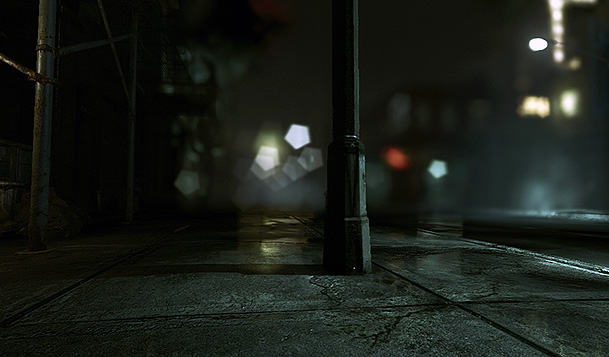
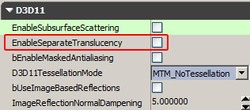
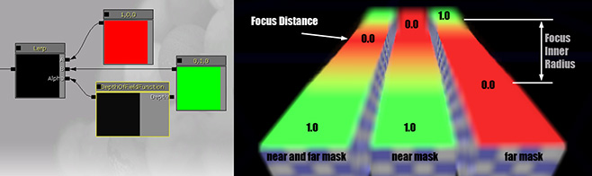

UDN
Search public documentation:
BokehDepthOfFieldJP
English Translation
中国翻译
한국어
Interested in the Unreal Engine?
Visit the Unreal Technology site.
Looking for jobs and company info?
Check out the Epic games site.
Questions about support via UDN?
Contact the UDN Staff
中国翻译
한국어
Interested in the Unreal Engine?
Visit the Unreal Technology site.
Looking for jobs and company info?
Check out the Epic games site.
Questions about support via UDN?
Contact the UDN Staff
ボケ被写界深度
概要
 焦点が合っていない部分は、ボケ (日本語) と呼ばれる丸みを帯びた形となります。焦点がかなり合っていない場合でも、小さな光る物体についてはよりはっきりと見えます。
これから、このエフェクトをシミュレートして、効率的なリアルタイム実装を可能にさせる近似値を受け入れることにします。多くの他の被写界深度のレンダリング方法と同様に、ポストプロセスにおいてカラーイメージに対して行うことにします。ピクセル単位の深度情報、および、いわゆる許容錯乱円機能を使用することによって、イメージにおけるある部分をどの程度シャープにするか (あるいはどの程度焦点をぼかすか) を計算することができます。
焦点が合っていない部分は、ボケ (日本語) と呼ばれる丸みを帯びた形となります。焦点がかなり合っていない場合でも、小さな光る物体についてはよりはっきりと見えます。
これから、このエフェクトをシミュレートして、効率的なリアルタイム実装を可能にさせる近似値を受け入れることにします。多くの他の被写界深度のレンダリング方法と同様に、ポストプロセスにおいてカラーイメージに対して行うことにします。ピクセル単位の深度情報、および、いわゆる許容錯乱円機能を使用することによって、イメージにおけるある部分をどの程度シャープにするか (あるいはどの程度焦点をぼかすか) を計算することができます。

リアルタイムにレンダリングされたこのイメージには、焦点があっているシャープな物体と焦点が合っていないブラーされた物体が写っています。ボケの形状は、5 ブレードレンズの絞りをミミックしています。ボケ被写界深度を起動する
 必ず、 Type (タイプ) を BokehDOF にセットします。
必ず、 Type (タイプ) を BokehDOF にセットします。 Quality (クオリティ) によって、パフォーマンスと引き替えにクオリティを高めることができますが、その効果は小さい場合があります。理想としては、Low (低い) のままにしておくべきです。視覚的効果に違いが生じ、かつ、パフォーマンスが充分である場合に限って設定値を上げるべきです。
BokehTexture (ボケテクスチャ) は、あらゆる 2D テクスチャにできますが、理想的には次のようにすべきです。
- グレイスケールであること。(正しいカラーフリンジはスクリーン位置依存ですが、カラーシフトをイメージに加えることによってカラーフリンジのように見えます)。
- 128 x 128 を超えないようにする。(これより大きくなるとメモリを浪費します)。
- 黒い境界線をもつこと。(四角形が大きいとより大きなテクスチャがレンダリングされます。また、ボケの形状がバイリニア フィルタリングからアンチエイリアス処理されます)。
- 圧縮されていないか、ルミナンスであるかのどちらかであること。
- 適正な輝度があること。(例を参照してください)。
ボケの形状

Translucency （半透明）

さらに、DepthOfFieldFunction (被写界深度機能) という新たなマテリアルノードによって、シェーディングを調整することができます。(例 : フェードアウトあるいはブラー状態にブレンド)。
既知の制約 (低レベル詳細度)
- このテクニックでは、半分の解像度のイメージをソースとして使用するため、輝度が高いピクセルの小規模なアーティファクトが、不適切なレイヤーに漏れる可能性があります。
- エフェクトはフルシーンのアンチエイリアス処理 (MSAA) によって機能しますが、ピクセルのうち非常に輝度が高い部分が不適切なレイヤーに漏れる場合があります。これを防ぐには、uber ポストプロセス エフェクトにおけるアップサンプリングを MSAA を意識したものにします。
- レイヤー内部のオクルージョンが処理できません。その結果、小規模な色漏れが生じる場合があります。
- フォーカスされていないあらゆるエフェクトがモーションブラーの影響を受けません。(これは、!MotionBlurSoftEdge 機能がエッジをソフトにすべきハードシルエットか、モーションブラーを喪失したかのどちらかを意味します)。
最適化 (低レベル詳細度)